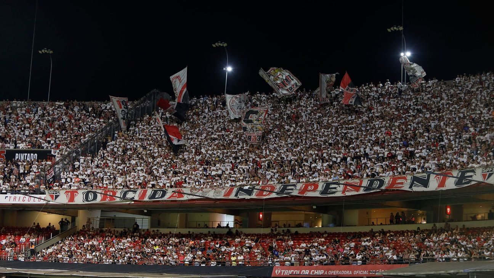

A Torcida Independente é uma das maiores e mais apaixonadas organizadas do futebol brasileiro. Fundada em 1972, ela nasceu com o espírito de levar a festa para as arquibancadas do São Paulo Futebol Clube, tornando-se símbolo de garra e devoção tricolor. Com seus tambores, bandeirões e cânticos ensaiados, a Independente transforma cada jogo no Morumbi numa experiência única. Sua presença é reconhecida não só pelo volume, mas pela fidelidade — nos momentos de glória ou nas fases difíceis, ela está lá, empurrando o time. Mais do que uma torcida, é uma identidade. Ser Independente é carregar com orgulho as cores vermelho, preto e branco, e provar que o amor pelo São Paulo vai muito além dos 90 minutos.
